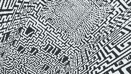

Protean Productions
present

Experience Philippe Fassier's iconic Profondeurs the way it was meant to be: in Virtual Reality, from within the labyrinth of mazes itself!

These were part of a series for the Jeux & Stratégies magazine from before the Internet was born 🪔
Here is a presentation of the labyrinth from the creator himself:
The textures for the app were obtained by the scanned pages made available by Yahn Drev on Vidéorègles.net.
Protean Productions extracted the relevant textures, and performed the algorithmic perspective removal.
The scans were originally assembled for a "concours":
Jeux & Stratégie can now be found on abandonware-magazines.org.
Here are a few pages from the original labyrinth: